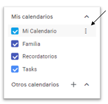
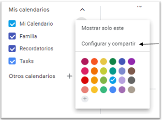
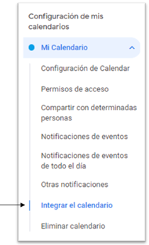
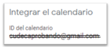
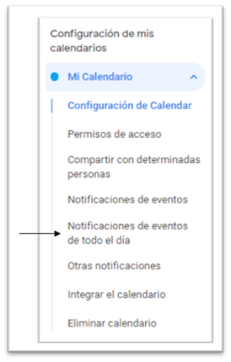
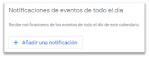
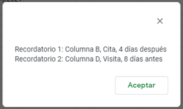

RecuerdaMe : Añade recordatorios desde hojas de cálculo.
1 Configuración inicial
En este apartado se mostrará cómo realizar la configuración inicial. El primer paso será identificar el ID de
nuestro calendario. Por otro lado, es importante entender que este complemento de hojas de cálculo de Google añade
eventos a su calendario, pero el recordatorio de cada evento se genera automáticamente según la configuración de su
calendario. En esta sección veremos también cómo configurar los recordatorios.
1.1 Cómo obtener el ID del calendario
Para poder añadir los recordatorios, se necesita el ID del calendario al que quieras añadirlos. A continuación,
explicamos como obtenerlo:
1. Abra su calendario en Google Calendar.
2. A la izquierda aparecerá un panel llamo “Mis calendarios”. Seleccione el icono de los tres puntos y dele a
“Configurar y compartir”.


3. Una vez dentro de la configuración, en el índice de la izquierda seleccione “Integrar el calendario”. Una vez
ahí, aparecerá el ID de nuestro calendario.


1.2 Cómo configurar los recordatorios
Al insertar un evento en el calendario, se crea automáticamente un recordatorio. A continuación, voy a mostrarle
como modificar ese recordatorio por defecto:
1. Abra su calendario en Google Calendar.
2. A la izquierda aparecerá un panel llamo “Mis calendarios”. Seleccione el icono de los tres puntos y dele a
“Configurar y compartir”.
3. Una vez dentro de la configuración del calendario, en el panel de la izquierda seleccionamos “Notificaciones de
eventos de todo el día” y ahí podrá añadir recordatorios a su gusto para los eventos.


1.3 Establecer la columna nombre
La columna nombre es la que contiene el nombre que formará parte del evento, por ejemplo, el nombre del paciente, de
manera que el nombre que aparecerá en el calendario será una combinación del nombre del paciente y del nombre del
recordatorio que introduciremos al añadir el recordatorio. Este campo se pedirá cuando creemos el primer
recordatorio.
Una columna podrá ser la columna nombre si no contiene ninguna celda vacía, en caso contrario, deberá rellenar
dichas celdas antes de poder crear los recordatorios.
2 Funciones
2.1 Añadir recordatorio
Esta función se encarga de añadir un recordatorio a una columna. Para añadir un recordatorio hay 2 requisitos
previos: haber introducido el ID del calendario y haber introducido la columna que contiene el nombre que formará
parte del recordatorio. En caso de que no se hayan introducido estos valores previamente, se pedirán al intentar
añadir un recordatorio.
Para añadir un recordatorio a una columna, se pedirá la letra de la columna que contiene las fechas. En caso de que
esa columna ya tenga un recordatorio, se mostrará la información del recordatorio, donde indicará si desea añadir
otro recordatorio o no. En caso afirmativo, se pedirá el nombre del recordatorio (Ejemplo: cita, seguimiento,
visita, …) y el número de días con posterioridad o anterioridad a las fechas de las que quiere el recordatorio. En
caso de querer el recordatorio antes de la fecha indicada, introduce el número con un signo menos delante (Ejemplo:
-5). Si el recordatorio será posterior a la fecha, simplemente introduce el número de días.
Al introducir los valores anteriores, se añadirá al calendario un evento por cada fecha que aparezca en esa columna.
El nombre del evento será una combinación del nombre del paciente, por ejemplo, cuya columna hemos seleccionado
previamente, y del nombre del recordatorio que hemos introducido (Ejemplo: Cita Marina).
Finalmente, las celdas pertenecientes a la columna a la que se ha añadido el recordatorio se bloquearán de manera
que para modificar alguna de las fechas, se deba hacer a través de la función “Modificar recordatorios”.
Si una columna tiene un recordatorio, al añadir una nueva fila se añadirá automáticamente el recordatorio al
calendario. Las fechas a las que se les ha asignado un recordatorio aparecerán subrayadas.
2.2 Eliminar recordatorio
Esta función se compone de 2 subfunciones. O bien se podrá eliminar todos los recordatorios de una columna o de una
celda.
2.1.2 Eliminar recordatorio de una columna
Para eliminar el recordatorio de una columna, se pedirá la letra de la columna de la que quiera eliminar el
recordatorio. Si esa columna tiene varios recordatorios, irá apareciendo en pantalla la información de estos, donde
indicará si es el recordatorio que quiere eliminar o no. Una vez eliminado el recordatorio, se volverá a habilitar
la edición de esa columna en caso de que no haya ningún recordatorio más en esta.
2.1.3 Eliminar recordatorio de una celda
Para eliminar el recordatorio de una celda, se pedirá la celda que contenga la fecha cuyo recordatorio desea
eliminar. En caso de que esa celda tenga varios recordatorios, irán apareciendo en pantalla la información de estos,
donde indicará si es el recordatorio que quiere eliminar o no. En este caso, no se habilitará la edición de la
celda, sino que, en caso de querer modificarla, deberá hacerlo a través de la función “Modificar recordatorios”.
Por otro lado, si elimina el recordatorio de una celda y quiere recuperarlo, deberá eliminar el recordatorio de la
columna entera y volver a añadirlo.
Cabe destacar que, si elimina los recordatorios de una columna eliminando recordatorios celda por celda, se
mantendrá guardada la información del recordatorio, de manera que, si añade una nueva fila en esa columna, se creará
el recordatorio correspondiente.
2.3 Modificar recordatorio
Esta función se compone de 2 subfunciones: modificar el recordatorio de una columna y modificar una celda con
recordatorio.
2.1.2 Modificar una fecha
Esta función se utilizará cuando se quiera modificar una fecha de una columna con recordatorio. Lo primero, deberá
introducir la celda en cuestión y posteriormente la nueva fecha, de manera que se modificará tanto la celda como el
recordatorio asociado a esta. En caso de que la columna tenga un recordatorio, pero se haya eliminado el
recordatorio de esa celda en concreto, solo se modificará la celda con la nueva fecha.
2.1.3 Modificar el recordatorio de una columna
Esta función se utilizará cuando desee modificar la información de un recordatorio perteneciente a una columna. Lo
primero, deberá introducir la letra de la columna de la que quiere modificar el recordatorio. En caso de que esa
columna posea varios recordatorios, irá apareciendo en pantalla la información de estos, de manera que elegirá cuál
de los recordatorios es el que quiere modificar. Podrá modificar el nombre del recordatorio (Ejemplo: cita, visita,
seguimiento, …) y el número de días posteriores o anteriores a la fecha. En caso de querer el recordatorio antes de
la fecha indicada, introduce el número con un signo menos delante (Ejemplo: -5). Si el recordatorio será posterior a
la fecha, simplemente introduce el número de días.
2.4 Ver recordatorios actuales
Esta función mostrará en pantalla un listado de los recordatorios activos. La estructura de la información será:
letra de la columna, nombre del recordatorio y número de días. Veamos un ejemplo:

2.5 Modificar ID Calendario
Esta función permite modificar el ID del calendario introducido al comienzo. Cabe destacar que si modifica el ID,
perderá el acceso a los eventos creados en el calendario actual, es decir, se mantendrán los eventos ya creados en
el calendario actual pero cualquier cambio que quiera hacer sobre ellos deberá hacerlo de forma manual desde Google
Calendar. Además, no se exportarán esos eventos al nuevo calendario, deberá volver a añadir los recordatorios.
2.6 Modificar columna nombre
Esta función permite modificar la columna que contiene el nombre que forma parte del nombre del evento, pero si
modifica este campo habiendo recordatorios creados, perderá el acceso a esos recordatorios, es decir, se mantendrán
los eventos con el nombre antiguo pero cualquier cambio que quiera hacer en esos eventos deberá hacerlo de forma
manual desde Google Calendar. Además, no se crearán de nuevo esos eventos con el nuevo nombre, deberá volver a
añadir los recordatorios. No se podrá modificar la columna nombre si la seleccionada contiene celdas vacías, deberá
rellenar dichas celdas antes de poder modificar la columna nombre.
2.7 Añadir una fila
Al añadir una fila nueva, si añade una fecha a una columna que tiene recordatorios asignados, se crearán
automáticamente los eventos correspondientes en el calendario, pero para ello, la celda perteneciente a la columna
que contiene el nombre que forma parte del evento debe estar rellena antes de añadir la celda con la fecha. En caso
contrario, se eliminará la fecha añadida y se pedirá que se rellene la celda requerida. Si quiere que esa fecha no
tenga recordatorio, deberá introducirla y posteriormente eliminar el recordatorio mediante la función “Eliminar
recordatorio de una celda”.
3 Soporte técnico
Para cualquier cuestión, contacteme a marinapachecorojas22@hotmail.com.